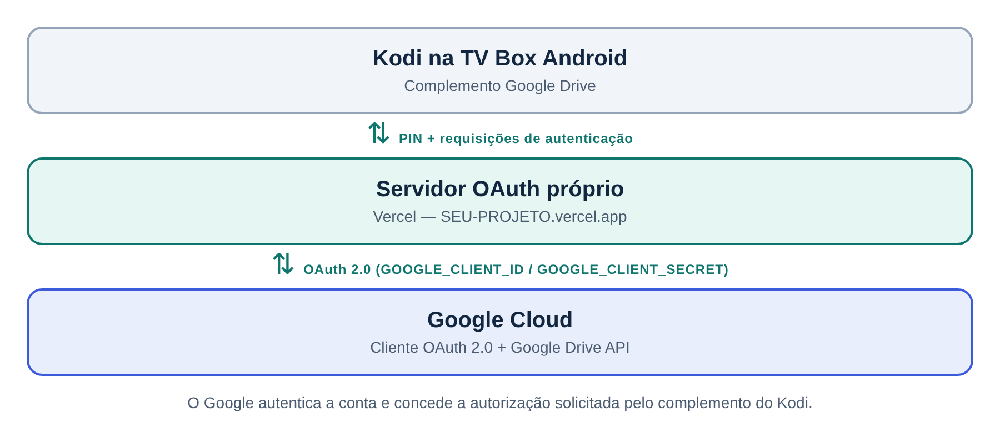

Google Drive no Kodi com servidor OAuth próprio
Contorne o bloqueio “Este aplicativo foi bloqueado pelo Google” hospedando gratuitamente o seu próprio servidor de autenticação na Vercel.
Por dantweet
Os nomes em MAIÚSCULAS, como SEU-USUARIO e SEU-PROJETO, são marcadores: substitua pelos seus dados. O endereço do seu servidor será sempre https://SEU-PROJETO.vercel.app.
Visão geral
Este tutorial mostra como configurar o complemento Google Drive do Kodi usando um servidor de autenticação OAuth 2.0 próprio, hospedado gratuitamente na Vercel. É útil quando o servidor público do complemento é barrado pelo Google, exibindo o erro:
Este aplicativo foi bloqueado pelo Google.
Em vez de depender do servidor público, você hospeda a sua aplicação, cria credenciais OAuth no Google Cloud e conecta tudo ao Kodi.
O que você vai precisar
- Contas no GitHub, na Vercel (pode entrar com o GitHub) e no Google Cloud.
- Kodi com o complemento Google Drive instalado (testado na versão 1.6.8, de Carlos Guzman, pelo repositório oficial do Kodi).
- Conta Google Workspace com acesso de administrador ao Admin Console.
- Um celular ou computador para digitar o PIN de autenticação.
Roteiro
Como a solução funciona
O Kodi delega o login ao servidor configurado no complemento (campo “Sign-in Server”). Ao trocar o servidor público pelo seu, o login passa a usar as suas credenciais OAuth.

Serviços utilizados
| Serviço | Finalidade |
|---|---|
| GitHub | Armazenar a sua cópia (fork) do código-fonte |
| Vercel | Hospedar o servidor de autenticação |
| Google Cloud | Criar credenciais OAuth e ativar a Google Drive API |
| Kodi | Executar o complemento Google Drive |
| Google Drive | Armazenar e acessar os arquivos |
Repositório utilizado: github.com/aldacco/drive-login. É a versão atualizada do projeto: dispensa Redis e guarda as credenciais do Google em variáveis de ambiente privadas.
Uma versão mais antiga (Sakuragi90/kodi-gdrive) usava a variável NEXT_PUBLIC_CLIENT_SECRET. Variáveis com prefixo NEXT_PUBLIC_ vão para o navegador, o que pode expor o segredo OAuth. Por isso adotamos o aldacco/drive-login.
Como esse código manipula o seu Client Secret, vale ler o repositório antes de publicá-lo.
Passo 1Fork no GitHub
O fork cria uma cópia do projeto na sua conta, que será publicada na Vercel.
- Acesse
aldacco/drive-logine faça login no GitHub. - Clique em Fork, no canto superior direito.
- Mantenha as opções padrão.
- Clique em Create fork.
Um repositório SEU-USUARIO/drive-login na sua conta do GitHub.
Passo 2Publicar na Vercel
2.1 Importar o repositório
- Acesse a Vercel e entre com a sua conta GitHub.
- Clique em Add New → Project.
- Localize
SEU-USUARIO/drive-login. - Clique em Import.
2.2 Configurações do projeto
| Campo | Configuração |
|---|---|
| Project Name | drive-login (ou outro nome) |
| Root Directory | ./ |
| Application Preset | Next.js |
| Build / Output / Install Command | Padrão |
Na primeira publicação, remova a variável de exemplo EXAMPLE_NAME e deixe as variáveis vazias (serão preenchidas no passo 4). Clique em Deploy.
2.3 Anote o endereço definitivo
A primeira implantação gera um endereço temporário com sufixo aleatório. Use o endereço definitivo (em “Domains”, nas configurações) e anote-o: https://SEU-PROJETO.vercel.app.
O mesmo endereço precisa ser usado no Google Cloud, na Vercel e no Kodi. Qualquer diferença (inclusive uma barra no final) causa erro.
Passo 3Configurar o Google Cloud
Acesse o Google Cloud Console e escolha um projeto existente ou crie um novo (aqui, SEU-PROJETO-GOOGLE).
3.1 Ativar a Google Drive API
- Acesse APIs e serviços → Biblioteca.
- Pesquise Google Drive API e abra-a.
- Clique em Ativar, se ainda não estiver ativa.
3.2 Criar o cliente OAuth
Em Google Auth Platform → Clientes, clique em Criar cliente:
| Campo | Valor |
|---|---|
| Tipo de aplicativo | Aplicativo da Web |
| Nome | Kodi Google Drive |
3.3 Origens JavaScript autorizadas
3.4 URIs de redirecionamento autorizados
Adicione exatamente o endereço abaixo, com /callback:
O URI de redirecionamento precisa corresponder exatamente ao endereço enviado pela aplicação. Cadastrar só o domínio em “Origens JavaScript” não basta.
Clique em Criar.
3.5 Guardar as credenciais
O Google exibirá o Client ID e o Client Secret. Guarde ambos em local seguro.
Nunca compartilhe o Client Secret em mensagens, capturas de tela, tutoriais ou repositórios públicos.
Se o app OAuth estiver em modo de teste, adicione sua conta Google como usuário de teste. Nesse modo, o Google pode expirar a autorização após alguns dias (cerca de 7), exigindo novo login no Kodi. Publicar o app em produção evita isso; confira as regras vigentes na documentação do Google.
Passo 4Variáveis de ambiente e redeploy
- No painel da Vercel, abra o projeto
drive-login. - Entre em Settings → Environment Variables.
- Cadastre as duas variáveis abaixo.
| Key | Value |
|---|---|
GOOGLE_CLIENT_ID | O Client ID do Google Cloud |
GOOGLE_CLIENT_SECRET | O Client Secret do Google Cloud |
Para ambas, selecione Production, Preview e Development e salve.
4.1 Fazer o redeploy
As variáveis foram criadas depois da primeira publicação, então é preciso gerar uma nova implantação.
- Abra a aba Deployments.
- Na implantação mais recente, clique nos três pontinhos (…).
- Selecione Redeploy e confirme.
- Aguarde o status Ready.
Passo 5Liberar o app no Admin Console do Google Workspace
Você precisa ser administrador do Google Workspace para executar este passo.
Antes de configurar o Kodi, libere o acesso do app à sua conta no Admin Console:
- Acesse o Admin Console com uma conta de administrador.
- Vá em Segurança → Controle de acesso e dados → Controles de API.
- Clique em Gerenciar acesso dos apps.
- Role até Aplicativos acessados e clique em Visualizar lista.
- Localize e selecione o app Kodi Google Drive (o nome do cliente OAuth criado no Passo 3).
- Clique em Alterar acesso.
- Marque o acesso para a sua conta e confirme.
O app Kodi Google Drive com acesso liberado para a sua conta. Agora você pode configurar o Kodi no próximo passo.
Passo 6Configurar o complemento no Kodi
6.1 Abrir as configurações
- Entre em Add-ons → Meus add-ons → Complementos de vídeo.
- Selecione Google Drive e abra Configurar.
- Entre na aba Advanced (Avançado).
6.2 Alterar o servidor de autenticação
No campo Sign-in Server (que vem com https://drive.signinserver.com), informe:
Não coloque barra (/) no final. Salve as configurações.
Passo 7Autenticar a conta
- Abra novamente o complemento Google Drive no Kodi.
- Escolha a opção para adicionar uma conta.
- O Kodi exibirá um QR Code e um PIN temporário.
- No celular ou computador, abra o endereço indicado.
- Informe o PIN.
- Faça login na conta Google desejada.
- Autorize o acesso solicitado.
A autenticação foi concluída usando o servidor próprio hospedado na Vercel.
Solução de problemas
Problema 1 — Aplicativo bloqueado pelo Google
| Item | Detalhe |
|---|---|
| Sintoma | “Este aplicativo foi bloqueado pelo Google.” |
| Causa | O servidor público de autenticação do complemento não permite concluir o login. |
| Solução | Hospedar instância própria (aldacco/drive-login + Vercel) com credenciais OAuth próprias, como neste tutorial. |
Problema 2 — Erro 400: redirect_uri_mismatch
| Item | Detalhe |
|---|---|
| Sintoma | “Erro 400: redirect_uri_mismatch”. |
| Causa | O endereço de retorno enviado (https://SEU-PROJETO.vercel.app/callback) não está cadastrado como URI de redirecionamento autorizado. |
| Diagnóstico | Nos detalhes do erro, o Google mostra o endereço exato enviado. Copie-o. |
Solução:
- Abra Google Cloud → Google Auth Platform → Clientes.
- Edite o cliente Kodi Google Drive.
- Adicione o endereço completo em URIs de redirecionamento autorizados.
- Salve e repita a autenticação.
Checklist de implantação
0 de 12 concluídos
Manutenção e boas práticas
| Item | Valor |
|---|---|
| GitHub | SEU-USUARIO/drive-login |
| Repositório original | aldacco/drive-login |
| Projeto Vercel | drive-login |
| Projeto Google Cloud | SEU-PROJETO-GOOGLE |
| Cliente OAuth | Kodi Google Drive |
| Complemento Kodi | Google Drive 1.6.8 |
| Servidor de autenticação | https://SEU-PROJETO.vercel.app |
| Callback OAuth | https://SEU-PROJETO.vercel.app/callback |
Cuidados para o futuro
- Não exclua o projeto da Vercel nem o cliente OAuth do Google Cloud.
- Não altere o domínio da Vercel sem atualizar os endereços autorizados no Google Cloud e no Kodi.
- Nunca exponha o Client Secret em variáveis
NEXT_PUBLIC_. - Se alterar as variáveis de ambiente, faça um novo redeploy.
- Não remova o acesso concedido ao app no Admin Console do Google Workspace.
- Se o Google exigir validação adicional, confira a tela de consentimento OAuth, incluindo usuários de teste e escopos.
Referências e conclusão
- GitHub — aldacco/drive-login
- Documentação da Vercel
- Google Cloud Console
- Google — OAuth 2.0 para aplicações web
- Site oficial do Kodi
Conclusão
A solução foi implementada e validada: o Kodi autenticou a conta Google usando uma aplicação própria, hospedada na Vercel, com credenciais OAuth criadas no Google Cloud.
O ponto mais importante é registrar corretamente o URI de retorno /callback no cliente OAuth. Esse ajuste resolveu o último erro e permitiu concluir o login.